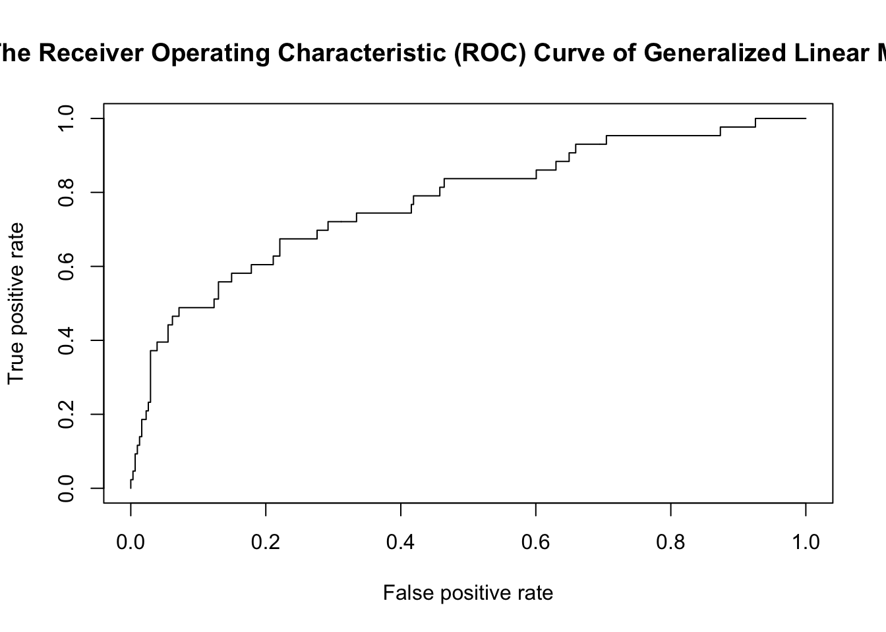

library(tidyverse)
library(stargazer)
library(ROCR)In this section, we want to generate a generalized linear model to see the relationship between patients’ mortality status and predictive variables.
Firstly, to prepare the data for the regression, the data types of categorical variables will be transformed to factor. This subset of variables includes group (1 denoting the derivation group, 2 denoting the validation group), gender (1 denoting male, 2 denoting female), outcome (0 denoting alive, 1 denoting death), and the remaining comorbidity variables (0 denoting not having the disease, 1 denoting having the disease)
convert_to_factor <- function(df, columns) {
df[columns] <- lapply(df[columns], factor)
return(df)
}
mortality_cleaned =
read_csv("mortality_data_cleaned.csv") |>
janitor::clean_names() |>
convert_to_factor(c("group", "gender", "outcome", "hypertensive",
"atrialfibrillation", "chd_with_no_mi", "diabetes",
"deficiencyanemias", "depression", "hyperlipemia",
"renal_failure", "copd"))Due to the response variable (outcome) is binary variable, a generalized linear model (GLM) is chosen for regression analysis.
Fit a logistic regression model using all patients data (including both the derivation and validation groups) and use the stepwise method to select predictors to be included in the model.
mortality_complete =
mortality_cleaned |>
select(-group, -id)
glm_complete = glm(outcome ~ ., data = mortality_complete, family = binomial(link = logit))
stepwise_complete = step(glm_complete)stepwise_complete |>
broom::tidy() |>
select(term, estimate, p.value) |>
knitr::kable(
caption = "Estimate and P-value of Generalized Linear Model Using All Patients Data",
col.names = c("Predictor", "Estimate", "P-value"),
digits = 3
) |>
kableExtra::kable_styling(
"basic",
full_width = FALSE,
bootstrap_options = c("striped", "hover", "condensed", "responsive"),
position = "center",
font_size = 16,
latex_options = c("hold_position")
)| Predictor | Estimate | P-value |
|---|---|---|
| (Intercept) | 19.259 | 0.045 |
| age | 0.014 | 0.123 |
| deficiencyanemias1 | -0.654 | 0.008 |
| renal_failure1 | -1.142 | 0.000 |
| copd1 | -1.128 | 0.014 |
| heart_rate | 0.023 | 0.002 |
| diastolic_blood_pressure | -0.027 | 0.024 |
| respiratory_rate | 0.040 | 0.150 |
| temperature | -0.267 | 0.134 |
| sp_o2 | -0.097 | 0.038 |
| urine_output | 0.000 | 0.122 |
| mch | 0.082 | 0.098 |
| mchc | -0.203 | 0.058 |
| rdw | 0.104 | 0.044 |
| leucocyte | 0.049 | 0.016 |
| platelets | -0.003 | 0.001 |
| lymphocyte | -0.025 | 0.122 |
| creatinine | -0.471 | 0.010 |
| urea_nitrogen | 0.022 | 0.002 |
| blood_potassium | 0.413 | 0.127 |
| blood_calcium | -0.760 | 0.000 |
| anion_gap | 0.206 | 0.001 |
| magnesium_ion | 0.718 | 0.095 |
| bicarbonate | -0.082 | 0.022 |
| pco2 | 0.039 | 0.002 |
The model fitted using data from all patients is:
\[ outcome \sim age+deficiencyanemias1+renal\_failure1+copd1\\ +heart\_rate+diastolic\_blood\_pressure+respiratory\_rate\\ +temperature+sp\_o2+urine\_output+mch+mchc+rdw+leucocyte\\ +platelets+lymphocyte+creatinine+urea\_nitrogen\\ +blood\_potassium+blood\_calcium+anion\_gap+magnesium\_ion\\ +bicarbonate+pco2 \]
It is worth noting that among the comorbidity variables, only deficiencyanemias, renal_failure, and copd are selected by model, and the estimates for all three are negative. This suggests that the occurrence of these three comorbidities is associated with a decrease in mortality, which is counterintuitive. This phenomenon may be attributed to the correlation between the onset of these diseases and early diagnosis and treatment. Early detection and treatment of these diseases might reduce the risk of death. Alternatively, the occurrence of these diseases may prompt patients to pay more attention to their health and take actions to improve their health conditions, thereby enhancing their survival rates. In the remaining variables, the most significant six are blood_calcium, anion_gap, platelets, heart_rate, urea_nitrogen, and pco2. They may have the potential to be important physiological indicators worth monitoring closely in ICU patients.
Fit a logistic regression model using patients data from group1 (derivation group) and use the stepwise method to select predictors to be included in the model.
mortality_derivation =
mortality_cleaned |>
filter(group == 1) |>
select(-group, -id)
glm_derivation = glm(outcome ~ ., data = mortality_derivation, family = binomial(link = logit))
stepwise_derivation = step(glm_derivation)stepwise_derivation |>
broom::tidy() |>
select(term, estimate, p.value) |>
knitr::kable(
caption = "Estimate and P-value of Generalized Linear Model Using Patients Data from Derivation Group",
col.names = c("Predictor", "Estimate", "P-value"),
digits = 3
) |>
kableExtra::kable_styling(
"basic",
full_width = FALSE,
bootstrap_options = c("striped", "hover", "condensed", "responsive"),
position = "center",
font_size = 16,
latex_options = c("hold_position")
)| Predictor | Estimate | P-value |
|---|---|---|
| (Intercept) | 3.672 | 0.555 |
| age | 0.025 | 0.036 |
| gender2 | -0.377 | 0.148 |
| hypertensive1 | -0.426 | 0.127 |
| atrialfibrillation1 | 0.455 | 0.089 |
| diabetes1 | -0.479 | 0.085 |
| deficiencyanemias1 | -0.634 | 0.033 |
| hyperlipemia1 | -0.441 | 0.127 |
| renal_failure1 | -0.894 | 0.007 |
| copd1 | -1.513 | 0.014 |
| heart_rate | 0.026 | 0.002 |
| diastolic_blood_pressure | -0.037 | 0.010 |
| sp_o2 | -0.108 | 0.040 |
| mcv | 0.046 | 0.016 |
| rdw | 0.120 | 0.034 |
| platelets | -0.002 | 0.049 |
| lymphocyte | -0.042 | 0.031 |
| creatinine | -0.646 | 0.003 |
| urea_nitrogen | 0.032 | 0.000 |
| blood_calcium | -0.942 | 0.000 |
| anion_gap | 0.310 | 0.000 |
| lactic_acid | 0.277 | 0.056 |
| pco2 | 0.037 | 0.005 |
The model fitted using data from derivation group is:
\[ outcome\sim age+gender2+hypertensive1+atrialfibrillation1+diabetes1\\ +deficiencyanemias1+hyperlipemia1+renal\_failure1+copd1+heart\_rate\\ +diastolic\_blood\_pressure+sp\_o2+mcv+rdw+platelets+lymphocyte\\ +creatinine+urea\_nitrogen+blood\_calcium+anion\_gap+lactic\_acid+pco2 \]
Among all the predictors selected, there are 7 comorbidity variables: hypertensive, atrialfibrillation, diabetes, deficiencyanemias, hyperlipemia, renal_failure and copd. All of them have negative estimates except for atrialfibrillation. This indicates that the occurrence of other complications leads to a decrease in mortality (as discussed in the complete model section), but the presence of atrial fibrillation is a noteworthy sign of mortality and should be closely monitored, especially in the ICU. In the remaining variables, the most significant five are blood_calcium, anion_gap, heart_rate, urea_nitrogen, and creatinine. All of them excapt for creatinine are also among the most significant factors in the complete model, and these four should be particularly noteworthy.
For the model generated using derivation group data, validate it on the validation group and plot Receiver Operating Characteristic (ROC) Curve.
mortality_validation =
mortality_cleaned |>
filter(group == 2) |>
select(-group, -id)
predict = predict(stepwise_derivation, newdata = mortality_validation, type = "response")
pred = prediction(predictions = predict, labels = mortality_validation$outcome)
roc = performance(pred, "tpr", "fpr")
auc = performance(pred, measure = "auc")@y.values[[1]]
plot(roc, colorize = F)
title(main = "The ROC Curve of Generalized Linear Model")
The AUC of the model on validation dataset: 0.7757475. According to the ROC plot and AUC value, the predictive performance of the model on the validation group data is generally satisfactory.